Vectors in SpaceVectơ và các phép toán trong không gian
Grade 12 · Topic: Vectors and Coordinates in SpaceLớp 12 · Chủ đề: Vectơ và hệ tọa độ trong không gian
1Lesson IntroductionGiới thiệu bài học
Learning goalsMục tiêu bài học
By the end of this lesson you can:
Sau bài học này, em có thể:
recognise vectors in space and equal or opposite vectors;
nhận biết vectơ trong không gian, vectơ bằng nhau, đối nhau;
add vectors with the triangle rule and the parallelepiped rule;
cộng vectơ bằng quy tắc ba điểm và quy tắc hình hộp;
find the dot product and the angle between vectors;
tính tích vô hướng của hai vectơ và góc giữa hai vectơ;
use vectors in a cube to find lengths and angles.
dùng vectơ trong hình lập phương để tính độ dài và góc.
2Mathematical VocabularyTừ vựng Toán học
vector in space – a quantity with a length and a direction, drawn as an arrow in space.
vectơ trong không gian – đại lượng có độ dài và hướng, biểu diễn bằng một mũi tên trong không gian.
magnitude (length) – the length of the arrow.
độ dài của vectơ – độ dài của đoạn thẳng biểu diễn vectơ.
equal vectors – vectors with the same direction and the same length.
hai vectơ bằng nhau – hai vectơ cùng hướng và cùng độ dài.
opposite vectors – vectors with the same length and opposite directions.
hai vectơ đối nhau – hai vectơ cùng độ dài và ngược hướng.
sum of vectors – the vector from the start of the first to the end of the second.
tổng của hai vectơ – vectơ đi từ điểm đầu của vectơ thứ nhất đến điểm cuối của vectơ thứ hai.
parallelepiped rule – the sum of three edge vectors from one vertex is the diagonal.
quy tắc hình hộp – tổng ba vectơ cạnh xuất phát từ một đỉnh là vectơ đường chéo hình hộp.
dot product – the number \(\vec a\cdot\vec b=|\vec a||\vec b|\cos\theta\).
tích vô hướng của hai vectơ – số \(\vec a\cdot\vec b=|\vec a||\vec b|\cos\theta\).
angle between vectors – the angle between two arrows drawn from the same point.
góc giữa hai vectơ – góc giữa hai vectơ có cùng điểm đầu, từ \(0^\circ\) đến \(180^\circ\).
cube – a solid with six equal square faces.
hình lập phương – khối có sáu mặt là các hình vuông bằng nhau.
3Useful English PhrasesCụm từ tiếng Anh thường gặp
Find the length of the vector.
Tìm độ dài của vectơ.
Find the dot product.
Tính tích vô hướng.
Find the angle between the two vectors.
Tìm góc giữa hai vectơ.
Express the vector in terms of \(\vec a,\vec b,\vec c\).
Biểu diễn vectơ theo \(\vec a,\vec b,\vec c\).
\(I\) is the midpoint of \(AB\).
\(I\) là trung điểm của \(AB\).
4Prerequisite ReviewÔn tập kiến thức nền
A vector has a direction and a length. In plane geometry you added vectors with the triangle rule \(\overrightarrow{AB}+\overrightarrow{BC}=\overrightarrow{AC}\); the same rule works in space.
Vectơ có hướng và độ dài. Ở hình học phẳng, ta cộng vectơ bằng quy tắc ba điểm \(\overrightarrow{AB}+\overrightarrow{BC}=\overrightarrow{AC}\); quy tắc này vẫn đúng trong không gian.
5TheoryLý thuyết
5.1 Vectors in spaceVectơ trong không gian và các phép toán
DefinitionĐịnh nghĩa
A vector in space \(\overrightarrow{AB}\) has start \(A\), end \(B\), a direction and a length \(|\overrightarrow{AB}|=AB\). Two vectors are equal if they have the same direction and the same length.
Vectơ trong không gian \(\overrightarrow{AB}\) có điểm đầu \(A\), điểm cuối \(B\), có hướng và độ dài của vectơ \(|\overrightarrow{AB}|=AB\). Hai vectơ hai vectơ bằng nhau nếu cùng hướng và cùng độ dài.
RulesQuy tắc
Triangle rule: \(\overrightarrow{AB}+\overrightarrow{BC}=\overrightarrow{AC}\).
Quy tắc ba điểm: \(\overrightarrow{AB}+\overrightarrow{BC}=\overrightarrow{AC}\).
Subtraction: \(\overrightarrow{AB}-\overrightarrow{AC}=\overrightarrow{CB}\).
Hiệu: \(\overrightarrow{AB}-\overrightarrow{AC}=\overrightarrow{CB}\).
Parallelepiped rule: \(\overrightarrow{AB}+\overrightarrow{AD}+\overrightarrow{AA'}=\overrightarrow{AC'}\).
Quy tắc hình hộp: \(\overrightarrow{AB}+\overrightarrow{AD}+\overrightarrow{AA'}=\overrightarrow{AC'}\).
Midpoint \(I\) of \(AB\): \(\overrightarrow{OI}=\dfrac12(\overrightarrow{OA}+\overrightarrow{OB})\).
Trung điểm \(I\) của \(AB\): \(\overrightarrow{OI}=\dfrac12(\overrightarrow{OA}+\overrightarrow{OB})\).
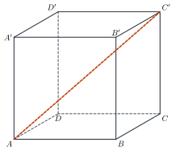
5.2 Dot product and angleTích vô hướng và góc giữa hai vectơ
FormulaCông thức
If \(\theta\) is the angle between \(\vec a\) and \(\vec b\) (\(0^\circ\le\theta\le180^\circ\)), then \(\vec a\cdot\vec b=|\vec a||\vec b|\cos\theta\). So \(\cos\theta=\dfrac{\vec a\cdot\vec b}{|\vec a||\vec b|}\), and \(\vec a\cdot\vec b=0\) exactly when \(\vec a\perp\vec b\).
Nếu \(\theta\) là góc giữa \(\vec a\) và \(\vec b\) (\(0^\circ\le\theta\le180^\circ\)) thì \(\vec a\cdot\vec b=|\vec a||\vec b|\cos\theta\). Suy ra \(\cos\theta=\dfrac{\vec a\cdot\vec b}{|\vec a||\vec b|}\), và \(\vec a\cdot\vec b=0\) khi và chỉ khi \(\vec a\perp\vec b\).
Watch out!Lưu ý
The angle between two vectors needs the same start point. To find \((\overrightarrow{AB},\overrightarrow{CD})\), move one vector, or use equal vectors such as \(\overrightarrow{CD}=-\overrightarrow{AB}\) in a cube.
Góc giữa hai vectơ cần cùng điểm đầu. Để tìm \((\overrightarrow{AB},\overrightarrow{CD})\), hãy dời một vectơ, hoặc dùng các vectơ bằng nhau như \(\overrightarrow{CD}=-\overrightarrow{AB}\) trong hình lập phương.
Useful in a cubeHay dùng trong hình lập phương
For a cube with edge \(a\): \(\overrightarrow{AB},\overrightarrow{AD},\overrightarrow{AA'}\) are pairwise perpendicular with length \(a\). Face diagonal: \(a\sqrt2\). Space diagonal: \(a\sqrt3\).
Với hình lập phương cạnh \(a\): \(\overrightarrow{AB},\overrightarrow{AD},\overrightarrow{AA'}\) đôi một vuông góc và có độ dài \(a\). Đường chéo mặt: \(a\sqrt2\). Đường chéo hình lập phương: \(a\sqrt3\).
6Worked ExamplesVí dụ có lời giải
ExampleVí dụ 1BasicCơ bản – Equal vectorsVectơ bằng nhau
In the cube \(ABCD.A'B'C'D'\), name three vectors equal to \(\overrightarrow{AB}\).
Trong hình lập phương \(ABCD.A'B'C'D'\), kể tên ba vectơ bằng \(\overrightarrow{AB}\).
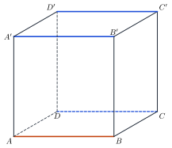
Analysis: Look for edges parallel to \(AB\) with the same direction.
Phân tích: Tìm các cạnh song song với \(AB\), cùng hướng.
The four edges \(AB,DC,A'B',D'C'\) are parallel and equal.
Bốn cạnh \(AB,DC,A'B',D'C'\) song song và bằng nhau.
\(\overrightarrow{AB}=\overrightarrow{DC}=\overrightarrow{A'B'}=\overrightarrow{D'C'}\).
\(\overrightarrow{AB}=\overrightarrow{DC}=\overrightarrow{A'B'}=\overrightarrow{D'C'}\).
ExampleVí dụ 2BasicCơ bản – Sum of vectorsTổng các vectơ
In the cube, find \(\overrightarrow{AB}+\overrightarrow{BC}+\overrightarrow{CC'}\).
Trong hình lập phương, tính \(\overrightarrow{AB}+\overrightarrow{BC}+\overrightarrow{CC'}\).
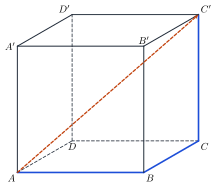
Analysis: Add step by step with the triangle rule.
Phân tích: Cộng lần lượt bằng quy tắc ba điểm.
\(\overrightarrow{AB}+\overrightarrow{BC}=\overrightarrow{AC}\).
\(\overrightarrow{AB}+\overrightarrow{BC}=\overrightarrow{AC}\).
\(\overrightarrow{AC}+\overrightarrow{CC'}=\overrightarrow{AC'}\).
\(\overrightarrow{AC}+\overrightarrow{CC'}=\overrightarrow{AC'}\).
\(\overrightarrow{AC'}\).
\(\overrightarrow{AC'}\).
ExampleVí dụ 3IntermediateTrung bình – Length of a diagonalĐộ dài đường chéo
A cube has edge \(a\). Find \(|\overrightarrow{AC'}|\).
Hình lập phương có cạnh \(a\). Tính \(|\overrightarrow{AC'}|\).
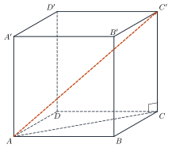
Analysis: Use \(\overrightarrow{AC'}=\overrightarrow{AB}+\overrightarrow{AD}+\overrightarrow{AA'}\) and square it.
Phân tích: Dùng \(\overrightarrow{AC'}=\overrightarrow{AB}+\overrightarrow{AD}+\overrightarrow{AA'}\) rồi bình phương.
\(|\overrightarrow{AC'}|^2=a^2+a^2+a^2+2(\overrightarrow{AB}\cdot\overrightarrow{AD}+\dots)\).
\(|\overrightarrow{AC'}|^2=a^2+a^2+a^2+2(\overrightarrow{AB}\cdot\overrightarrow{AD}+\dots)\).
The three edges are perpendicular, so all the dot products are 0.
Ba cạnh đôi một vuông góc nên các tích vô hướng đều bằng 0.
\(|\overrightarrow{AC'}|=a\sqrt3\).
\(|\overrightarrow{AC'}|=a\sqrt3\).
ExampleVí dụ 4IntermediateTrung bình – A dot productMột tích vô hướng
A cube has edge 4. Find \(\overrightarrow{AB}\cdot\overrightarrow{AC}\) and the angle between them.
Hình lập phương có cạnh 4. Tính \(\overrightarrow{AB}\cdot\overrightarrow{AC}\) và góc giữa hai vectơ.
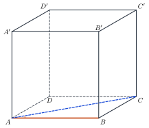
Analysis: \(AC=4\sqrt2\) and the angle \(\widehat{BAC}=45^\circ\).
Phân tích: \(AC=4\sqrt2\) và góc \(\widehat{BAC}=45^\circ\).
\(\overrightarrow{AB}\cdot\overrightarrow{AC}=4\cdot4\sqrt2\cdot\cos45^\circ\).
\(\overrightarrow{AB}\cdot\overrightarrow{AC}=4\cdot4\sqrt2\cdot\cos45^\circ\).
\(=16\sqrt2\cdot\dfrac{\sqrt2}{2}=16\).
\(=16\sqrt2\cdot\dfrac{\sqrt2}{2}=16\).
The dot product is 16; the angle is \(45^\circ\).
Tích vô hướng bằng 16; góc bằng \(45^\circ\).
ExampleVí dụ 5AdvancedNâng cao – Perpendicular vectorsHai vectơ vuông góc
In the cube \(ABCD.A'B'C'D'\), show that \(AC'\perp BD\).
Trong hình lập phương \(ABCD.A'B'C'D'\), chứng minh \(AC'\perp BD\).
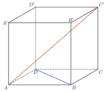
Analysis: Write both vectors with \(\vec a=\overrightarrow{AB},\vec b=\overrightarrow{AD},\vec c=\overrightarrow{AA'}\).
Phân tích: Viết cả hai vectơ theo \(\vec a=\overrightarrow{AB},\vec b=\overrightarrow{AD},\vec c=\overrightarrow{AA'}\).
\(\overrightarrow{AC'}=\vec a+\vec b+\vec c\), \(\overrightarrow{BD}=\vec b-\vec a\).
\(\overrightarrow{AC'}=\vec a+\vec b+\vec c\), \(\overrightarrow{BD}=\vec b-\vec a\).
\(\overrightarrow{AC'}\cdot\overrightarrow{BD}=|\vec b|^2-|\vec a|^2=0\) (the cross terms are 0).
\(\overrightarrow{AC'}\cdot\overrightarrow{BD}=|\vec b|^2-|\vec a|^2=0\) (các tích chéo bằng 0).
So \(AC'\perp BD\).
Vậy \(AC'\perp BD\).
7PracticeBài tập luyện tập
A. Multiple ChoiceA. Trắc nghiệm nhiều lựa chọn
In the parallelepiped \(ABCD.A'B'C'D'\), \(\overrightarrow{AB}+\overrightarrow{AD}+\overrightarrow{AA'}=\)…
Trong hình hộp \(ABCD.A'B'C'D'\), \(\overrightarrow{AB}+\overrightarrow{AD}+\overrightarrow{AA'}=\)…
Answer: d. Parallelepiped rule: three edges from one vertex add up to the diagonal from that vertex.
Đáp án d. Quy tắc hình hộp: tổng ba vectơ cạnh xuất phát từ một đỉnh là vectơ đường chéo xuất phát từ đỉnh đó.
In the tetrahedron \(ABCD\), \(M\), \(N\) are the midpoints of \(AB\), \(CD\). Then \(\overrightarrow{MN}=k(\overrightarrow{AD}+\overrightarrow{BC})\) with \(k=\)…
Cho tứ diện \(ABCD\), \(M\), \(N\) lần lượt là trung điểm của \(AB\), \(CD\). Khi đó \(\overrightarrow{MN}=k(\overrightarrow{AD}+\overrightarrow{BC})\) với \(k=\)…
Answer: c. \(\overrightarrow{MN}=\overrightarrow{MA}+\overrightarrow{AD}+\overrightarrow{DN}\) and \(\overrightarrow{MN}=\overrightarrow{MB}+\overrightarrow{BC}+\overrightarrow{CN}\); add them (\(\overrightarrow{MA}+\overrightarrow{MB}=\vec0\), likewise at \(N\)).
Đáp án c. \(\overrightarrow{MN}=\overrightarrow{MA}+\overrightarrow{AD}+\overrightarrow{DN}\) và \(\overrightarrow{MN}=\overrightarrow{MB}+\overrightarrow{BC}+\overrightarrow{CN}\); cộng vế (\(\overrightarrow{MA}+\overrightarrow{MB}=\vec0\), tương tự tại \(N\)).
\(ABCD\) is a regular tetrahedron with edge 4. \(\overrightarrow{AB}\cdot\overrightarrow{AC}=\)…
Cho tứ diện đều \(ABCD\) cạnh 4. Khi đó \(\overrightarrow{AB}\cdot\overrightarrow{AC}=\)…
Answer: c. Move the vectors to a common start: two edges of an equilateral face make \(60^\circ\) (or \(120^\circ\) if one is reversed); opposite edges are perpendicular.
Đáp án c. Dời hai vectơ về chung điểm đầu: hai cạnh của một mặt (tam giác đều) tạo góc \(60^\circ\) (hoặc \(120^\circ\) nếu một vectơ ngược hướng); hai cạnh đối diện vuông góc.
\(ABCD.A'B'C'D'\) is a parallelepiped (see the figure). How many vectors whose start and end points are vertices of it are equal to \(\overrightarrow{BC'}\) (not counting \(\overrightarrow{BC'}\) itself)?
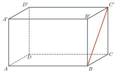
Cho hình hộp \(ABCD.A'B'C'D'\) (xem hình). Có bao nhiêu vectơ có điểm đầu, điểm cuối là các đỉnh của hình hộp và bằng \(\overrightarrow{BC'}\) (không kể chính \(\overrightarrow{BC'}\))?
Answer: a. \(\overrightarrow{BC'}\) is a face diagonal; the opposite faces of a parallelepiped are parallelograms, so we list the parallel segments of the same length and keep the right direction: 1 vectors.
Đáp án a. \(\overrightarrow{BC'}\) là một đường chéo của mặt; các mặt đối diện của hình hộp là hình bình hành nên ta liệt kê các đoạn song song, cùng độ dài rồi chọn đúng hướng: có 1 vectơ.
A room is a rectangular box \(ABCD.A'B'C'D'\) with \(AB=8\) m, \(AD=8\) m, \(AA'=4\) m. Two light strings are stretched along \(\overrightarrow{AC'}\) and \(\overrightarrow{DB'}\) (see the figure). Find \(\cos\left(\overrightarrow{AC'},\overrightarrow{DB'}\right)\).
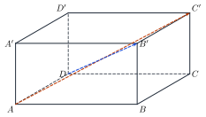
Một căn phòng có dạng hình hộp chữ nhật \(ABCD.A'B'C'D'\) với \(AB=8\) m, \(AD=8\) m, \(AA'=4\) m. Hai dây đèn trang trí được căng theo \(\overrightarrow{AC'}\) và \(\overrightarrow{DB'}\) (xem hình). Tính \(\cos\left(\overrightarrow{AC'},\overrightarrow{DB'}\right)\).
Answer: b. Put \(A\) at the origin, \(AB\), \(AD\), \(AA'\) on the axes: \(\overrightarrow{AC'}=(8;\,8;\,4)\), \(\overrightarrow{DB'}=(8;\,-8;\,4)\), both of length \(\sqrt{144}=12\). \(\cos=\dfrac{16}{144}=\dfrac{1}{9}\).
Đáp án b. Đặt \(A\) ở gốc tọa độ, \(AB\), \(AD\), \(AA'\) trên các trục: \(\overrightarrow{AC'}=(8;\,8;\,4)\), \(\overrightarrow{DB'}=(8;\,-8;\,4)\), cùng độ dài \(\sqrt{144}=12\). \(\cos=\dfrac{16}{144}=\dfrac{1}{9}\).
A camping tent has the shape of a regular pyramid \(S.ABCD\); \(O\) is the center of the square base, \(OA=5\) dm and the height \(SO=12\) dm (see the figure). Find \(\overrightarrow{SA}\cdot\overrightarrow{SC}\).
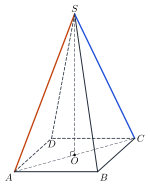
Một chiếc lều cắm trại có dạng hình chóp tứ giác đều \(S.ABCD\); \(O\) là tâm của đáy, \(OA=5\) dm và chiều cao \(SO=12\) dm (xem hình). Tính \(\overrightarrow{SA}\cdot\overrightarrow{SC}\).
Answer: d. \(\overrightarrow{SA}\cdot\overrightarrow{SC}=(\overrightarrow{SO}+\overrightarrow{OA})\cdot(\overrightarrow{SO}-\overrightarrow{OA})=SO^2-OA^2=144-25=119\).
Đáp án d. \(\overrightarrow{SA}\cdot\overrightarrow{SC}=(\overrightarrow{SO}+\overrightarrow{OA})\cdot(\overrightarrow{SO}-\overrightarrow{OA})=SO^2-OA^2=144-25=119\).
B. True or FalseB. Đúng hoặc sai
Three pairwise perpendicular forces of 2 N, 3 N, 6 N act at one point. The resultant force has magnitude 7 N.
Ba lực đôi một vuông góc có độ lớn 2 N, 3 N, 6 N cùng tác dụng vào một điểm. Hợp lực có độ lớn 7 N.
The resultant is the diagonal of the box built on the forces: \(\sqrt{2^2+3^2+6^2}=7\) N.
Hợp lực là đường chéo hình hộp chữ nhật dựng trên ba lực: \(\sqrt{2^2+3^2+6^2}=7\) N.
In the pyramid \(S.ABCD\) whose base is a parallelogram with center \(O\): \(\overrightarrow{SA}+\overrightarrow{SC}=\overrightarrow{SB}+\overrightarrow{SD}\).
Hình chóp \(S.ABCD\) có đáy là hình bình hành tâm \(O\). Khi đó \(\overrightarrow{SA}+\overrightarrow{SC}=\overrightarrow{SB}+\overrightarrow{SD}\).
\(O\) is the midpoint of \(AC\) and \(BD\): \(\overrightarrow{SA}+\overrightarrow{SC}=\overrightarrow{SB}+\overrightarrow{SD}=2\overrightarrow{SO}\).
\(O\) là trung điểm của \(AC\) và \(BD\): \(\overrightarrow{SA}+\overrightarrow{SC}=\overrightarrow{SB}+\overrightarrow{SD}=2\overrightarrow{SO}\).
\(ABCD.A'B'C'D'\) is a cube (see the figure). Then \(\overrightarrow{DC'}\perp\overrightarrow{B'C}\).
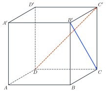
Cho hình lập phương \(ABCD.A'B'C'D'\) (xem hình). Khi đó \(\overrightarrow{DC'}\perp\overrightarrow{B'C}\).
Take the cube with edge 1 and \(A\) at the origin: \(\overrightarrow{DC'}=(1;\,0;\,1)\), \(\overrightarrow{B'C}=(0;\,1;\,-1)\), dot product \(-1\), so the statement is false.
Xét hình lập phương cạnh 1, \(A\) ở gốc tọa độ: \(\overrightarrow{DC'}=(1;\,0;\,1)\), \(\overrightarrow{B'C}=(0;\,1;\,-1)\), tích vô hướng bằng \(-1\), nên mệnh đề sai.
C. Short AnswerC. Trả lời ngắn
A cube \(ABCD.A'B'C'D'\) has edge 5. Find \(\overrightarrow{AD}\cdot\overrightarrow{AC'}\).
Hình lập phương \(ABCD.A'B'C'D'\) có cạnh 5. Tính \(\overrightarrow{AD}\cdot\overrightarrow{AC'}\).
Enter a number.
Nhập một số.
Use the edge vectors; the answer is 1·5².
Dùng ba vectơ cạnh; đáp số là 1·5².
In the regular tetrahedron \(ABCD\), find the angle (in degrees) between \(\overrightarrow{AB}\) and \(\overrightarrow{AC}\).
Trong tứ diện đều \(ABCD\), tìm góc (đơn vị độ) giữa hai vectơ \(\overrightarrow{AB}\) và \(\overrightarrow{AC}\).
Enter a number.
Nhập một số.
Move the vectors to a common start point, then use the equilateral faces.
Dời hai vectơ về chung điểm đầu, rồi dùng tính chất các mặt là tam giác đều.
The tetrahedron \(ABCD\) has \(AB=8\), \(CD=6\) and the angle between \(\overrightarrow{AB}\) and \(\overrightarrow{DC}\) is \(90^\circ\). \(M\), \(N\) are the midpoints of \(AD\), \(BC\) (see the figure). Find \(MN\).
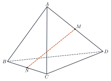
Cho tứ diện \(ABCD\) có \(AB=8\), \(CD=6\) và góc giữa hai vectơ \(\overrightarrow{AB}\), \(\overrightarrow{DC}\) bằng \(90^\circ\). \(M\), \(N\) là trung điểm của \(AD\), \(BC\) (xem hình). Tính \(MN\).
Enter a number.
Nhập một số.
\(2\overrightarrow{MN}=\overrightarrow{AB}+\overrightarrow{DC}\), so \(4MN^2=64+36+2\cdot8\cdot6\cos90^\circ=100\), \(MN^2=25\), \(MN=5\).
\(2\overrightarrow{MN}=\overrightarrow{AB}+\overrightarrow{DC}\), nên \(4MN^2=64+36+2\cdot8\cdot6\cos90^\circ=100\), \(MN^2=25\), \(MN=5\).
D. Self-practice: Multiple ChoiceD. Tự luyện: trắc nghiệm
\(ABCD.A'B'C'D'\) is a cube. What is the angle (in degrees) between \(\overrightarrow{B'C'}\) and \(\overrightarrow{B'D'}\)?
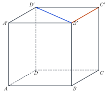
Cho hình lập phương \(ABCD.A'B'C'D'\). Góc (độ) giữa hai vectơ \(\overrightarrow{B'C'}\) và \(\overrightarrow{B'D'}\) bằng bao nhiêu?
Answer: b. Put the cube with edge 1 on coordinates: \(\overrightarrow{B'C'}=(0;\,1;\,0)\), \(\overrightarrow{B'D'}=(-1;\,1;\,0)\), \(\cos=\dfrac{1}{\sqrt{1}\cdot\sqrt{2}}\), so the angle is \(45^\circ\).
Đáp án b. Gắn hình lập phương cạnh 1 vào hệ tọa độ: \(\overrightarrow{B'C'}=(0;\,1;\,0)\), \(\overrightarrow{B'D'}=(-1;\,1;\,0)\), \(\cos=\dfrac{1}{\sqrt{1}\cdot\sqrt{2}}\), nên góc bằng \(45^\circ\).
\(G\) is the centroid of the tetrahedron \(ABCD\). Then \(\overrightarrow{AG}=k\left(\overrightarrow{AB}+\overrightarrow{AC}+\overrightarrow{AD}\right)\) with \(k=\)…
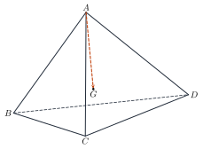
\(G\) là trọng tâm của tứ diện \(ABCD\). Khi đó \(\overrightarrow{AG}=k\left(\overrightarrow{AB}+\overrightarrow{AC}+\overrightarrow{AD}\right)\) với \(k=\)…
Answer: d. \(\overrightarrow{GA}+\overrightarrow{GB}+\overrightarrow{GC}+\overrightarrow{GD}=\vec 0\Rightarrow 4\overrightarrow{AG}=\overrightarrow{AB}+\overrightarrow{AC}+\overrightarrow{AD}\).
Đáp án d. \(\overrightarrow{GA}+\overrightarrow{GB}+\overrightarrow{GC}+\overrightarrow{GD}=\vec 0\Rightarrow 4\overrightarrow{AG}=\overrightarrow{AB}+\overrightarrow{AC}+\overrightarrow{AD}\).
\(ABC.A'B'C'\) is a triangular prism with \(\overrightarrow{AA'}=\vec a\), \(\overrightarrow{AB}=\vec b\), \(\overrightarrow{AC}=\vec c\); \(M\) is the midpoint of \(CC'\). Then \(\overrightarrow{AM}=\)…
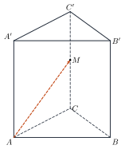
Cho hình lăng trụ tam giác \(ABC.A'B'C'\) với \(\overrightarrow{AA'}=\vec a\), \(\overrightarrow{AB}=\vec b\), \(\overrightarrow{AC}=\vec c\); \(M\) là trung điểm của \(CC'\). Khi đó \(\overrightarrow{AM}=\)…
Answer: c. Go from \(A\) to \(M\) along the edges: \(\overrightarrow{AM}=\dfrac{1}{2}\vec a+\vec c\).
Đáp án c. Đi từ \(A\) tới \(M\) theo các cạnh: \(\overrightarrow{AM}=\dfrac{1}{2}\vec a+\vec c\).
\(ABCD.A'B'C'D'\) is a cube with edge \(4\). Find \(\left|\overrightarrow{AB}+\overrightarrow{BC'}\right|\).
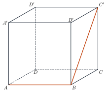
Cho hình lập phương \(ABCD.A'B'C'D'\) cạnh \(4\). Tính \(\left|\overrightarrow{AB}+\overrightarrow{BC'}\right|\).
Answer: a. With \(\overrightarrow{AB}\), \(\overrightarrow{AD}\), \(\overrightarrow{AA'}\) as unit directions (length \(4\)), the vector is \(4\cdot(1;\,1;\,1)\), length \(4\sqrt{3}=4\sqrt{3}\).
Đáp án a. Lấy \(\overrightarrow{AB}\), \(\overrightarrow{AD}\), \(\overrightarrow{AA'}\) làm ba hướng (độ dài \(4\)), vectơ bằng \(4\cdot(1;\,1;\,1)\), độ dài \(4\sqrt{3}=4\sqrt{3}\).
A force \(\vec F\) of \(100\) N pulls a sled along a straight road for \(20\) m. The angle between \(\vec F\) and the displacement is \(60^\circ\). The work \(A=\vec F\cdot\vec d\) (J) is…
Một lực \(\vec F\) có độ lớn \(100\) N kéo xe trượt đi \(20\) m trên đường thẳng. Góc giữa \(\vec F\) và độ dời là \(60^\circ\). Công \(A=\vec F\cdot\vec d\) (J) bằng…
Answer: c. \(A=|\vec F|\cdot|\vec d|\cos60^\circ=100\cdot20\cdot\dfrac{1}{2}=1000\).
Đáp án c. \(A=|\vec F|\cdot|\vec d|\cos60^\circ=100\cdot20\cdot\dfrac{1}{2}=1000\).
In the tetrahedron \(ABCD\), \(M\), \(N\) are the midpoints of \(AB\), \(CD\) and \(I\) is the midpoint of \(MN\). Which equality is true?
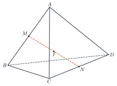
Cho tứ diện \(ABCD\); \(M\), \(N\) là trung điểm của \(AB\), \(CD\) và \(I\) là trung điểm của \(MN\). Đẳng thức nào đúng?
Answer: c. Use midpoints: \(\overrightarrow{IA}+\overrightarrow{IB}=2\overrightarrow{IM}\), \(\overrightarrow{IC}+\overrightarrow{ID}=2\overrightarrow{IN}\), \(\overrightarrow{IM}+\overrightarrow{IN}=\vec0\); \(2\overrightarrow{MN}=\overrightarrow{AD}+\overrightarrow{BC}=\overrightarrow{AC}+\overrightarrow{BD}\). Only \(\overrightarrow{IM}+\overrightarrow{IN}=\vec 0\) is among the true ones.
Đáp án c. Dùng trung điểm: \(\overrightarrow{IA}+\overrightarrow{IB}=2\overrightarrow{IM}\), \(\overrightarrow{IC}+\overrightarrow{ID}=2\overrightarrow{IN}\), \(\overrightarrow{IM}+\overrightarrow{IN}=\vec0\); \(2\overrightarrow{MN}=\overrightarrow{AD}+\overrightarrow{BC}=\overrightarrow{AC}+\overrightarrow{BD}\). Trong các phương án chỉ \(\overrightarrow{IM}+\overrightarrow{IN}=\vec 0\) đúng.
A square lamp \(ABCD\) weighing \(24\) N hangs from a hook \(S\) by four equal chains \(SA, SB, SC, SD\), each \(5\) dm long; \(S\) is \(3\) dm above the lamp (see the figure). The tension in each chain (N) is…
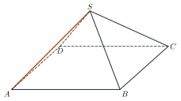
Một chiếc đèn hình vuông \(ABCD\) nặng \(24\) N được treo vào móc \(S\) bằng bốn sợi xích bằng nhau \(SA, SB, SC, SD\), mỗi sợi dài \(5\) dm; \(S\) cao hơn mặt đèn \(3\) dm (xem hình). Lực căng của mỗi sợi xích (N) là…
Answer: b. The vertical parts of the four tensions balance the weight: \(4T\cos\alpha=24\) with \(\cos\alpha=\dfrac{3}{5}\), so \(T=10\).
Đáp án b. Thành phần thẳng đứng của bốn lực căng cân bằng trọng lực: \(4T\cos\alpha=24\) với \(\cos\alpha=\dfrac{3}{5}\), nên \(T=10\).
\(|\vec a|=2\), \(|\vec b|=5\) and \(\vec a\cdot\vec b=5\). The angle between \(\vec a\) and \(\vec b\) is…
Cho \(|\vec a|=2\), \(|\vec b|=5\) và \(\vec a\cdot\vec b=5\). Góc giữa hai vectơ \(\vec a\) và \(\vec b\) bằng…
Answer: a. \(\cos(\vec a,\vec b)=\dfrac{5}{2\cdot5}=\dfrac{1}{2}\), so the angle is \(60^\circ\).
Đáp án a. \(\cos(\vec a,\vec b)=\dfrac{5}{2\cdot5}=\dfrac{1}{2}\), nên góc bằng \(60^\circ\).
A. Multiple ChoiceA. Trắc nghiệm nhiều lựa chọn
In the parallelepiped \(ABCD.A'B'C'D'\), \(\overrightarrow{CB}+\overrightarrow{CD}+\overrightarrow{CC'}=\)…
Trong hình hộp \(ABCD.A'B'C'D'\), \(\overrightarrow{CB}+\overrightarrow{CD}+\overrightarrow{CC'}=\)…
Answer: d. Parallelepiped rule: three edges from one vertex add up to the diagonal from that vertex.
Đáp án d. Quy tắc hình hộp: tổng ba vectơ cạnh xuất phát từ một đỉnh là vectơ đường chéo xuất phát từ đỉnh đó.
In the tetrahedron \(ABCD\), \(M\), \(N\) are the midpoints of \(AB\), \(CD\). Then \(\overrightarrow{MN}=k(\overrightarrow{AC}+\overrightarrow{BD})\) with \(k=\)…
Cho tứ diện \(ABCD\), \(M\), \(N\) lần lượt là trung điểm của \(AB\), \(CD\). Khi đó \(\overrightarrow{MN}=k(\overrightarrow{AC}+\overrightarrow{BD})\) với \(k=\)…
Answer: c. \(\overrightarrow{MN}=\overrightarrow{MA}+\overrightarrow{AC}+\overrightarrow{CN}\) and \(\overrightarrow{MN}=\overrightarrow{MB}+\overrightarrow{BD}+\overrightarrow{DN}\); add them (\(\overrightarrow{MA}+\overrightarrow{MB}=\vec0\), likewise at \(N\)).
Đáp án c. \(\overrightarrow{MN}=\overrightarrow{MA}+\overrightarrow{AC}+\overrightarrow{CN}\) và \(\overrightarrow{MN}=\overrightarrow{MB}+\overrightarrow{BD}+\overrightarrow{DN}\); cộng vế (\(\overrightarrow{MA}+\overrightarrow{MB}=\vec0\), tương tự tại \(N\)).
\(ABCD\) is a regular tetrahedron with edge 6. \(\overrightarrow{AB}\cdot\overrightarrow{CD}=\)…
Cho tứ diện đều \(ABCD\) cạnh 6. Khi đó \(\overrightarrow{AB}\cdot\overrightarrow{CD}=\)…
Answer: c. Move the vectors to a common start: two edges of an equilateral face make \(60^\circ\) (or \(120^\circ\) if one is reversed); opposite edges are perpendicular.
Đáp án c. Dời hai vectơ về chung điểm đầu: hai cạnh của một mặt (tam giác đều) tạo góc \(60^\circ\) (hoặc \(120^\circ\) nếu một vectơ ngược hướng); hai cạnh đối diện vuông góc.
Count the vectors with both endpoints among the vertices of the parallelepiped \(ABCD.A'B'C'D'\) (figure) that are equal to \(\overrightarrow{B'D'}\) (not counting \(\overrightarrow{B'D'}\) itself).
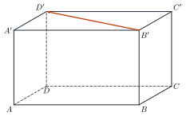
Đếm số vectơ có điểm đầu, điểm cuối là đỉnh của hình hộp \(ABCD.A'B'C'D'\) (hình vẽ) và bằng \(\overrightarrow{B'D'}\) (không kể chính \(\overrightarrow{B'D'}\)).
Answer: a. \(\overrightarrow{B'D'}\) is a face diagonal; the opposite faces of a parallelepiped are parallelograms, so we list the parallel segments of the same length and keep the right direction: 1 vectors.
Đáp án a. \(\overrightarrow{B'D'}\) là một đường chéo của mặt; các mặt đối diện của hình hộp là hình bình hành nên ta liệt kê các đoạn song song, cùng độ dài rồi chọn đúng hướng: có 1 vectơ.
To decorate a classroom shaped like the box \(ABCD.A'B'C'D'\) (\(AB=7\) m, \(AD=4\) m, \(AA'=4\) m), ribbons follow \(\overrightarrow{AC'}\) and \(\overrightarrow{CA'}\) (figure). The cosine of the angle between these two vectors is…
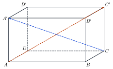
Để trang trí một lớp học dạng hình hộp chữ nhật \(ABCD.A'B'C'D'\) (\(AB=7\) m, \(AD=4\) m, \(AA'=4\) m), người ta căng dây ruy băng theo \(\overrightarrow{AC'}\) và \(\overrightarrow{CA'}\) (hình vẽ). Côsin của góc giữa hai vectơ này là…
Answer: a. Put \(A\) at the origin, \(AB\), \(AD\), \(AA'\) on the axes: \(\overrightarrow{AC'}=(7;\,4;\,4)\), \(\overrightarrow{CA'}=(-7;\,-4;\,4)\), both of length \(\sqrt{81}=9\). \(\cos=\dfrac{-49}{81}=-\dfrac{49}{81}\).
Đáp án a. Đặt \(A\) ở gốc tọa độ, \(AB\), \(AD\), \(AA'\) trên các trục: \(\overrightarrow{AC'}=(7;\,4;\,4)\), \(\overrightarrow{CA'}=(-7;\,-4;\,4)\), cùng độ dài \(\sqrt{81}=9\). \(\cos=\dfrac{-49}{81}=-\dfrac{49}{81}\).
The frame of a tent is a regular pyramid \(S.ABCD\) with base center \(O\), \(OA=4\) dm, \(SO=3\) dm (figure). The dot product \(\overrightarrow{SA}\cdot\overrightarrow{SB}\) equals…
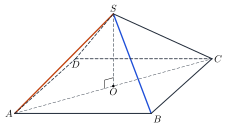
Khung một chiếc lều là hình chóp tứ giác đều \(S.ABCD\) có tâm đáy \(O\), \(OA=4\) dm, \(SO=3\) dm (hình vẽ). Tích vô hướng \(\overrightarrow{SA}\cdot\overrightarrow{SB}\) bằng…
Answer: a. \(\overrightarrow{SA}\cdot\overrightarrow{SB}=(\overrightarrow{SO}+\overrightarrow{OA})\cdot(\overrightarrow{SO}+\overrightarrow{OB})=SO^2+\overrightarrow{OA}\cdot\overrightarrow{OB}=9+0=9\) because \(OA\perp OB\) and \(SO\) is perpendicular to the base.
Đáp án a. \(\overrightarrow{SA}\cdot\overrightarrow{SB}=(\overrightarrow{SO}+\overrightarrow{OA})\cdot(\overrightarrow{SO}+\overrightarrow{OB})=SO^2+\overrightarrow{OA}\cdot\overrightarrow{OB}=9+0=9\) vì \(OA\perp OB\) và \(SO\) vuông góc với đáy.
B. True or FalseB. Đúng hoặc sai
Three pairwise perpendicular forces of 1 N, 2 N, 2 N act at one point. The resultant force has magnitude 5 N.
Ba lực đôi một vuông góc có độ lớn 1 N, 2 N, 2 N cùng tác dụng vào một điểm. Hợp lực có độ lớn 5 N.
The resultant is the diagonal of the box built on the forces: \(\sqrt{1^2+2^2+2^2}=3\) N.
Hợp lực là đường chéo hình hộp chữ nhật dựng trên ba lực: \(\sqrt{1^2+2^2+2^2}=3\) N.
In the pyramid \(S.ABCD\) whose base is a parallelogram with center \(O\): \(\overrightarrow{SA}+\overrightarrow{SB}=\overrightarrow{SC}+\overrightarrow{SD}\).
Hình chóp \(S.ABCD\) có đáy là hình bình hành tâm \(O\). Khi đó \(\overrightarrow{SA}+\overrightarrow{SB}=\overrightarrow{SC}+\overrightarrow{SD}\).
\(O\) is the midpoint of \(AC\) and \(BD\): \(\overrightarrow{SA}+\overrightarrow{SC}=\overrightarrow{SB}+\overrightarrow{SD}=2\overrightarrow{SO}\).
\(O\) là trung điểm của \(AC\) và \(BD\): \(\overrightarrow{SA}+\overrightarrow{SC}=\overrightarrow{SB}+\overrightarrow{SD}=2\overrightarrow{SO}\).
In the cube \(ABCD.A'B'C'D'\) (figure), the vectors \(\overrightarrow{DC'}\) and \(\overrightarrow{C'A'}\) are perpendicular.
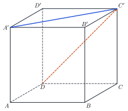
Trong hình lập phương \(ABCD.A'B'C'D'\) (hình vẽ), hai vectơ \(\overrightarrow{DC'}\) và \(\overrightarrow{C'A'}\) vuông góc với nhau.
Take the cube with edge 1 and \(A\) at the origin: \(\overrightarrow{DC'}=(1;\,0;\,1)\), \(\overrightarrow{C'A'}=(-1;\,-1;\,0)\), dot product \(-1\), so the statement is false.
Xét hình lập phương cạnh 1, \(A\) ở gốc tọa độ: \(\overrightarrow{DC'}=(1;\,0;\,1)\), \(\overrightarrow{C'A'}=(-1;\,-1;\,0)\), tích vô hướng bằng \(-1\), nên mệnh đề sai.
C. Short AnswerC. Trả lời ngắn
A cube \(ABCD.A'B'C'D'\) has edge 7. Find \(\overrightarrow{AD}\cdot\overrightarrow{AC}\).
Hình lập phương \(ABCD.A'B'C'D'\) có cạnh 7. Tính \(\overrightarrow{AD}\cdot\overrightarrow{AC}\).
Enter a number.
Nhập một số.
Use the edge vectors; the answer is 1·7².
Dùng ba vectơ cạnh; đáp số là 1·7².
In the regular tetrahedron \(ABCD\), find the angle (in degrees) between \(\overrightarrow{AB}\) and \(\overrightarrow{CD}\).
Trong tứ diện đều \(ABCD\), tìm góc (đơn vị độ) giữa hai vectơ \(\overrightarrow{AB}\) và \(\overrightarrow{CD}\).
Enter a number.
Nhập một số.
Move the vectors to a common start point, then use the equilateral faces.
Dời hai vectơ về chung điểm đầu, rồi dùng tính chất các mặt là tam giác đều.
In the tetrahedron \(ABCD\) (figure), \(AB=8\), \(CD=6\), \(\left(\overrightarrow{AB},\overrightarrow{DC}\right)=90^\circ\); \(M\) and \(N\) are the midpoints of \(AD\) and \(BC\). Compute the length \(MN\).
Trong tứ diện \(ABCD\) (hình vẽ), \(AB=8\), \(CD=6\), \(\left(\overrightarrow{AB},\overrightarrow{DC}\right)=90^\circ\); \(M\), \(N\) lần lượt là trung điểm của \(AD\), \(BC\). Tính độ dài \(MN\).
Enter a number.
Nhập một số.
\(2\overrightarrow{MN}=\overrightarrow{AB}+\overrightarrow{DC}\), so \(4MN^2=64+36+2\cdot8\cdot6\cos90^\circ=100\), \(MN^2=25\), \(MN=5\).
\(2\overrightarrow{MN}=\overrightarrow{AB}+\overrightarrow{DC}\), nên \(4MN^2=64+36+2\cdot8\cdot6\cos90^\circ=100\), \(MN^2=25\), \(MN=5\).
D. Self-practice: Multiple ChoiceD. Tự luyện: trắc nghiệm
\(ABCD.A'B'C'D'\) is a cube. What is the angle (in degrees) between \(\overrightarrow{CB'}\) and \(\overrightarrow{CB}\)?
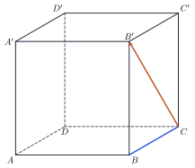
Cho hình lập phương \(ABCD.A'B'C'D'\). Góc (độ) giữa hai vectơ \(\overrightarrow{CB'}\) và \(\overrightarrow{CB}\) bằng bao nhiêu?
Answer: a. Put the cube with edge 1 on coordinates: \(\overrightarrow{CB'}=(0;\,-1;\,1)\), \(\overrightarrow{CB}=(0;\,-1;\,0)\), \(\cos=\dfrac{1}{\sqrt{2}\cdot\sqrt{1}}\), so the angle is \(45^\circ\).
Đáp án a. Gắn hình lập phương cạnh 1 vào hệ tọa độ: \(\overrightarrow{CB'}=(0;\,-1;\,1)\), \(\overrightarrow{CB}=(0;\,-1;\,0)\), \(\cos=\dfrac{1}{\sqrt{2}\cdot\sqrt{1}}\), nên góc bằng \(45^\circ\).
\(G\) is the centroid of the tetrahedron \(ABCD\). It is known that \(\overrightarrow{AG}=k\left(\overrightarrow{AB}+\overrightarrow{AC}+\overrightarrow{AD}\right)\) with \(k=\)…
\(G\) là trọng tâm của tứ diện \(ABCD\). Biết rằng \(\overrightarrow{AG}=k\left(\overrightarrow{AB}+\overrightarrow{AC}+\overrightarrow{AD}\right)\) với \(k=\)…
Answer: d. \(\overrightarrow{GA}+\overrightarrow{GB}+\overrightarrow{GC}+\overrightarrow{GD}=\vec 0\Rightarrow 4\overrightarrow{AG}=\overrightarrow{AB}+\overrightarrow{AC}+\overrightarrow{AD}\).
Đáp án d. \(\overrightarrow{GA}+\overrightarrow{GB}+\overrightarrow{GC}+\overrightarrow{GD}=\vec 0\Rightarrow 4\overrightarrow{AG}=\overrightarrow{AB}+\overrightarrow{AC}+\overrightarrow{AD}\).
\(ABC.A'B'C'\) is a triangular prism with \(\overrightarrow{AA'}=\vec a\), \(\overrightarrow{AB}=\vec b\), \(\overrightarrow{AC}=\vec c\); \(M\) is the centroid of triangle \(A'B'C'\). Then \(\overrightarrow{AM}=\)…
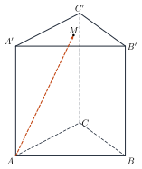
Cho hình lăng trụ tam giác \(ABC.A'B'C'\) với \(\overrightarrow{AA'}=\vec a\), \(\overrightarrow{AB}=\vec b\), \(\overrightarrow{AC}=\vec c\); \(M\) là trọng tâm tam giác \(A'B'C'\). Khi đó \(\overrightarrow{AM}=\)…
Answer: d. Go from \(A\) to \(M\) along the edges: \(\overrightarrow{AM}=\vec a+\dfrac{1}{3}\vec b+\dfrac{1}{3}\vec c\).
Đáp án d. Đi từ \(A\) tới \(M\) theo các cạnh: \(\overrightarrow{AM}=\vec a+\dfrac{1}{3}\vec b+\dfrac{1}{3}\vec c\).
\(ABCD.A'B'C'D'\) is a cube with edge \(3\). Find \(\left|\overrightarrow{AC}-\overrightarrow{AA'}\right|\).
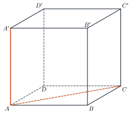
Cho hình lập phương \(ABCD.A'B'C'D'\) cạnh \(3\). Tính \(\left|\overrightarrow{AC}-\overrightarrow{AA'}\right|\).
Answer: c. With \(\overrightarrow{AB}\), \(\overrightarrow{AD}\), \(\overrightarrow{AA'}\) as unit directions (length \(3\)), the vector is \(3\cdot(1;\,1;\,-1)\), length \(3\sqrt{3}=3\sqrt{3}\).
Đáp án c. Lấy \(\overrightarrow{AB}\), \(\overrightarrow{AD}\), \(\overrightarrow{AA'}\) làm ba hướng (độ dài \(3\)), vectơ bằng \(3\cdot(1;\,1;\,-1)\), độ dài \(3\sqrt{3}=3\sqrt{3}\).
A force \(\vec F\) of \(120\) N pulls a sled along a straight road for \(10\) m. The angle between \(\vec F\) and the displacement is \(0^\circ\). The work \(A=\vec F\cdot\vec d\) (J) is…
Một lực \(\vec F\) có độ lớn \(120\) N kéo xe trượt đi \(10\) m trên đường thẳng. Góc giữa \(\vec F\) và độ dời là \(0^\circ\). Công \(A=\vec F\cdot\vec d\) (J) bằng…
Answer: b. \(A=|\vec F|\cdot|\vec d|\cos0^\circ=120\cdot10\cdot1=1200\).
Đáp án b. \(A=|\vec F|\cdot|\vec d|\cos0^\circ=120\cdot10\cdot1=1200\).
In the tetrahedron \(ABCD\), \(M\), \(N\) are the midpoints of \(AB\), \(CD\) and \(I\) is the midpoint of \(MN\). Which of the following equalities holds?
Cho tứ diện \(ABCD\); \(M\), \(N\) là trung điểm của \(AB\), \(CD\) và \(I\) là trung điểm của \(MN\). Đẳng thức nào sau đây luôn đúng?
Answer: d. Use midpoints: \(\overrightarrow{IA}+\overrightarrow{IB}=2\overrightarrow{IM}\), \(\overrightarrow{IC}+\overrightarrow{ID}=2\overrightarrow{IN}\), \(\overrightarrow{IM}+\overrightarrow{IN}=\vec0\); \(2\overrightarrow{MN}=\overrightarrow{AD}+\overrightarrow{BC}=\overrightarrow{AC}+\overrightarrow{BD}\). Only \(\overrightarrow{MN}=\dfrac12\left(\overrightarrow{AC}+\overrightarrow{BD}\right)\) is among the true ones.
Đáp án d. Dùng trung điểm: \(\overrightarrow{IA}+\overrightarrow{IB}=2\overrightarrow{IM}\), \(\overrightarrow{IC}+\overrightarrow{ID}=2\overrightarrow{IN}\), \(\overrightarrow{IM}+\overrightarrow{IN}=\vec0\); \(2\overrightarrow{MN}=\overrightarrow{AD}+\overrightarrow{BC}=\overrightarrow{AC}+\overrightarrow{BD}\). Trong các phương án chỉ \(\overrightarrow{MN}=\dfrac12\left(\overrightarrow{AC}+\overrightarrow{BD}\right)\) đúng.
A square lamp \(ABCD\) weighing \(12\) N hangs from a hook \(S\) by four equal chains \(SA, SB, SC, SD\), each \(5\) dm long; \(S\) is \(3\) dm above the lamp (see the figure). The tension in each chain (N) is…
Một chiếc đèn hình vuông \(ABCD\) nặng \(12\) N được treo vào móc \(S\) bằng bốn sợi xích bằng nhau \(SA, SB, SC, SD\), mỗi sợi dài \(5\) dm; \(S\) cao hơn mặt đèn \(3\) dm (xem hình). Lực căng của mỗi sợi xích (N) là…
Answer: b. The vertical parts of the four tensions balance the weight: \(4T\cos\alpha=12\) with \(\cos\alpha=\dfrac{3}{5}\), so \(T=5\).
Đáp án b. Thành phần thẳng đứng của bốn lực căng cân bằng trọng lực: \(4T\cos\alpha=12\) với \(\cos\alpha=\dfrac{3}{5}\), nên \(T=5\).
\(|\vec a|=2\), \(|\vec b|=5\) and \(\vec a\cdot\vec b=0\). The angle between \(\vec a\) and \(\vec b\) is…
Cho \(|\vec a|=2\), \(|\vec b|=5\) và \(\vec a\cdot\vec b=0\). Góc giữa hai vectơ \(\vec a\) và \(\vec b\) bằng…
Answer: b. \(\cos(\vec a,\vec b)=\dfrac{0}{2\cdot5}=0\), so the angle is \(90^\circ\).
Đáp án b. \(\cos(\vec a,\vec b)=\dfrac{0}{2\cdot5}=0\), nên góc bằng \(90^\circ\).
A. Multiple ChoiceA. Trắc nghiệm nhiều lựa chọn
In the parallelepiped \(ABCD.A'B'C'D'\), \(\overrightarrow{DA}+\overrightarrow{DC}+\overrightarrow{DD'}=\)…
Trong hình hộp \(ABCD.A'B'C'D'\), \(\overrightarrow{DA}+\overrightarrow{DC}+\overrightarrow{DD'}=\)…
Answer: d. Parallelepiped rule: three edges from one vertex add up to the diagonal from that vertex.
Đáp án d. Quy tắc hình hộp: tổng ba vectơ cạnh xuất phát từ một đỉnh là vectơ đường chéo xuất phát từ đỉnh đó.
In the tetrahedron \(ABCD\), \(M\), \(N\) are the midpoints of \(AD\), \(BC\). Then \(\overrightarrow{MN}=k(\overrightarrow{AB}+\overrightarrow{DC})\) with \(k=\)…
Cho tứ diện \(ABCD\), \(M\), \(N\) lần lượt là trung điểm của \(AD\), \(BC\). Khi đó \(\overrightarrow{MN}=k(\overrightarrow{AB}+\overrightarrow{DC})\) với \(k=\)…
Answer: c. \(\overrightarrow{MN}=\overrightarrow{MA}+\overrightarrow{AB}+\overrightarrow{BN}\) and \(\overrightarrow{MN}=\overrightarrow{MD}+\overrightarrow{DC}+\overrightarrow{CN}\); add them (\(\overrightarrow{MA}+\overrightarrow{MD}=\vec0\), likewise at \(N\)).
Đáp án c. \(\overrightarrow{MN}=\overrightarrow{MA}+\overrightarrow{AB}+\overrightarrow{BN}\) và \(\overrightarrow{MN}=\overrightarrow{MD}+\overrightarrow{DC}+\overrightarrow{CN}\); cộng vế (\(\overrightarrow{MA}+\overrightarrow{MD}=\vec0\), tương tự tại \(N\)).
\(ABCD\) is a regular tetrahedron with edge 8. \(\overrightarrow{AB}\cdot\overrightarrow{BC}=\)…
Cho tứ diện đều \(ABCD\) cạnh 8. Khi đó \(\overrightarrow{AB}\cdot\overrightarrow{BC}=\)…
Answer: a. Move the vectors to a common start: two edges of an equilateral face make \(60^\circ\) (or \(120^\circ\) if one is reversed); opposite edges are perpendicular.
Đáp án a. Dời hai vectơ về chung điểm đầu: hai cạnh của một mặt (tam giác đều) tạo góc \(60^\circ\) (hoặc \(120^\circ\) nếu một vectơ ngược hướng); hai cạnh đối diện vuông góc.
Consider the vectors joining two vertices of the parallelepiped \(ABCD.A'B'C'D'\) (figure). The number of such vectors that are equal to \(\overrightarrow{BD}\) (not counting \(\overrightarrow{BD}\) itself) is…
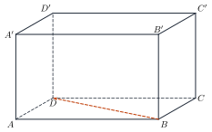
Xét các vectơ nối hai đỉnh của hình hộp \(ABCD.A'B'C'D'\) (hình vẽ). Số vectơ bằng \(\overrightarrow{BD}\) (không kể chính \(\overrightarrow{BD}\)) là…
Answer: b. \(\overrightarrow{BD}\) is a face diagonal; the opposite faces of a parallelepiped are parallelograms, so we list the parallel segments of the same length and keep the right direction: 1 vectors.
Đáp án b. \(\overrightarrow{BD}\) là một đường chéo của mặt; các mặt đối diện của hình hộp là hình bình hành nên ta liệt kê các đoạn song song, cùng độ dài rồi chọn đúng hướng: có 1 vectơ.
In a hall \(ABCD.A'B'C'D'\) with \(AB=7\) m, \(AD=4\) m, height \(AA'=4\) m, two cables run along \(\overrightarrow{AC'}\) and \(\overrightarrow{CA'}\) (figure). Then \(\cos\left(\overrightarrow{AC'},\overrightarrow{CA'}\right)=\)…
Trong một hội trường \(ABCD.A'B'C'D'\) có \(AB=7\) m, \(AD=4\) m, chiều cao \(AA'=4\) m, hai sợi cáp chạy theo \(\overrightarrow{AC'}\) và \(\overrightarrow{CA'}\) (hình vẽ). Khi đó \(\cos\left(\overrightarrow{AC'},\overrightarrow{CA'}\right)=\)…
Answer: b. Put \(A\) at the origin, \(AB\), \(AD\), \(AA'\) on the axes: \(\overrightarrow{AC'}=(7;\,4;\,4)\), \(\overrightarrow{CA'}=(-7;\,-4;\,4)\), both of length \(\sqrt{81}=9\). \(\cos=\dfrac{-49}{81}=-\dfrac{49}{81}\).
Đáp án b. Đặt \(A\) ở gốc tọa độ, \(AB\), \(AD\), \(AA'\) trên các trục: \(\overrightarrow{AC'}=(7;\,4;\,4)\), \(\overrightarrow{CA'}=(-7;\,-4;\,4)\), cùng độ dài \(\sqrt{81}=9\). \(\cos=\dfrac{-49}{81}=-\dfrac{49}{81}\).
A pyramid-shaped tent \(S.ABCD\) is regular; its base has center \(O\) with \(OA=3\) dm and its pole \(SO=2\) dm (figure). Then \(\overrightarrow{SA}\cdot\overrightarrow{SB}=\)…
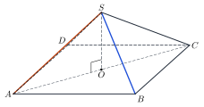
Một lều hình chóp tứ giác đều \(S.ABCD\) có tâm đáy \(O\), \(OA=3\) dm và cột chống \(SO=2\) dm (hình vẽ). Khi đó \(\overrightarrow{SA}\cdot\overrightarrow{SB}=\)…
Answer: d. \(\overrightarrow{SA}\cdot\overrightarrow{SB}=(\overrightarrow{SO}+\overrightarrow{OA})\cdot(\overrightarrow{SO}+\overrightarrow{OB})=SO^2+\overrightarrow{OA}\cdot\overrightarrow{OB}=4+0=4\) because \(OA\perp OB\) and \(SO\) is perpendicular to the base.
Đáp án d. \(\overrightarrow{SA}\cdot\overrightarrow{SB}=(\overrightarrow{SO}+\overrightarrow{OA})\cdot(\overrightarrow{SO}+\overrightarrow{OB})=SO^2+\overrightarrow{OA}\cdot\overrightarrow{OB}=4+0=4\) vì \(OA\perp OB\) và \(SO\) vuông góc với đáy.
B. True or FalseB. Đúng hoặc sai
Three pairwise perpendicular forces of 4 N, 4 N, 7 N act at one point. The resultant force has magnitude 9 N.
Ba lực đôi một vuông góc có độ lớn 4 N, 4 N, 7 N cùng tác dụng vào một điểm. Hợp lực có độ lớn 9 N.
The resultant is the diagonal of the box built on the forces: \(\sqrt{4^2+4^2+7^2}=9\) N.
Hợp lực là đường chéo hình hộp chữ nhật dựng trên ba lực: \(\sqrt{4^2+4^2+7^2}=9\) N.
In the pyramid \(S.ABCD\) whose base is a parallelogram with center \(O\): \(\overrightarrow{SA}+\overrightarrow{SB}+\overrightarrow{SC}+\overrightarrow{SD}=4\overrightarrow{SO}\).
Hình chóp \(S.ABCD\) có đáy là hình bình hành tâm \(O\). Khi đó \(\overrightarrow{SA}+\overrightarrow{SB}+\overrightarrow{SC}+\overrightarrow{SD}=4\overrightarrow{SO}\).
\(O\) is the midpoint of \(AC\) and \(BD\): \(\overrightarrow{SA}+\overrightarrow{SC}=\overrightarrow{SB}+\overrightarrow{SD}=2\overrightarrow{SO}\).
\(O\) là trung điểm của \(AC\) và \(BD\): \(\overrightarrow{SA}+\overrightarrow{SC}=\overrightarrow{SB}+\overrightarrow{SD}=2\overrightarrow{SO}\).
For the cube \(ABCD.A'B'C'D'\) shown in the figure: \(\overrightarrow{AC'}\cdot\overrightarrow{DC'}=0\).
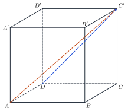
Với hình lập phương \(ABCD.A'B'C'D'\) như hình vẽ: \(\overrightarrow{AC'}\cdot\overrightarrow{DC'}=0\).
Take the cube with edge 1 and \(A\) at the origin: \(\overrightarrow{AC'}=(1;\,1;\,1)\), \(\overrightarrow{DC'}=(1;\,0;\,1)\), dot product \(2\), so the statement is false.
Xét hình lập phương cạnh 1, \(A\) ở gốc tọa độ: \(\overrightarrow{AC'}=(1;\,1;\,1)\), \(\overrightarrow{DC'}=(1;\,0;\,1)\), tích vô hướng bằng \(2\), nên mệnh đề sai.
C. Short AnswerC. Trả lời ngắn
A cube \(ABCD.A'B'C'D'\) has edge 9. Find \(\overrightarrow{AB}\cdot\overrightarrow{A'C'}\).
Hình lập phương \(ABCD.A'B'C'D'\) có cạnh 9. Tính \(\overrightarrow{AB}\cdot\overrightarrow{A'C'}\).
Enter a number.
Nhập một số.
Use the edge vectors; the answer is 1·9².
Dùng ba vectơ cạnh; đáp số là 1·9².
In the regular tetrahedron \(ABCD\), find the angle (in degrees) between \(\overrightarrow{AB}\) and \(\overrightarrow{BC}\).
Trong tứ diện đều \(ABCD\), tìm góc (đơn vị độ) giữa hai vectơ \(\overrightarrow{AB}\) và \(\overrightarrow{BC}\).
Enter a number.
Nhập một số.
Move the vectors to a common start point, then use the equilateral faces.
Dời hai vectơ về chung điểm đầu, rồi dùng tính chất các mặt là tam giác đều.
Given a tetrahedron \(ABCD\) with \(AB=8\), \(CD=6\), the vectors \(\overrightarrow{AB}\), \(\overrightarrow{DC}\) form an angle of \(90^\circ\). Let \(M\), \(N\) be the midpoints of \(AD\), \(BC\) (figure). What is \(MN\)?
Cho tứ diện \(ABCD\) với \(AB=8\), \(CD=6\), hai vectơ \(\overrightarrow{AB}\), \(\overrightarrow{DC}\) tạo với nhau góc \(90^\circ\). Gọi \(M\), \(N\) là trung điểm của \(AD\), \(BC\) (hình vẽ). \(MN\) bằng bao nhiêu?
Enter a number.
Nhập một số.
\(2\overrightarrow{MN}=\overrightarrow{AB}+\overrightarrow{DC}\), so \(4MN^2=64+36+2\cdot8\cdot6\cos90^\circ=100\), \(MN^2=25\), \(MN=5\).
\(2\overrightarrow{MN}=\overrightarrow{AB}+\overrightarrow{DC}\), nên \(4MN^2=64+36+2\cdot8\cdot6\cos90^\circ=100\), \(MN^2=25\), \(MN=5\).
D. Self-practice: Multiple ChoiceD. Tự luyện: trắc nghiệm
\(ABCD.A'B'C'D'\) is a cube. What is the angle (in degrees) between \(\overrightarrow{BD}\) and \(\overrightarrow{D'A}\)?
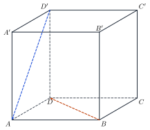
Cho hình lập phương \(ABCD.A'B'C'D'\). Góc (độ) giữa hai vectơ \(\overrightarrow{BD}\) và \(\overrightarrow{D'A}\) bằng bao nhiêu?
Answer: a. Put the cube with edge 1 on coordinates: \(\overrightarrow{BD}=(-1;\,1;\,0)\), \(\overrightarrow{D'A}=(0;\,-1;\,-1)\), \(\cos=\dfrac{-1}{\sqrt{2}\cdot\sqrt{2}}\), so the angle is \(120^\circ\).
Đáp án a. Gắn hình lập phương cạnh 1 vào hệ tọa độ: \(\overrightarrow{BD}=(-1;\,1;\,0)\), \(\overrightarrow{D'A}=(0;\,-1;\,-1)\), \(\cos=\dfrac{-1}{\sqrt{2}\cdot\sqrt{2}}\), nên góc bằng \(120^\circ\).
\(G\) is the centroid of the tetrahedron \(ABCD\). Suppose \(\overrightarrow{AG}=k\left(\overrightarrow{AB}+\overrightarrow{AC}+\overrightarrow{AD}\right)\) with \(k=\)…
\(G\) là trọng tâm của tứ diện \(ABCD\). Giả sử \(\overrightarrow{AG}=k\left(\overrightarrow{AB}+\overrightarrow{AC}+\overrightarrow{AD}\right)\) với \(k=\)…
Answer: b. \(\overrightarrow{GA}+\overrightarrow{GB}+\overrightarrow{GC}+\overrightarrow{GD}=\vec 0\Rightarrow 4\overrightarrow{AG}=\overrightarrow{AB}+\overrightarrow{AC}+\overrightarrow{AD}\).
Đáp án b. \(\overrightarrow{GA}+\overrightarrow{GB}+\overrightarrow{GC}+\overrightarrow{GD}=\vec 0\Rightarrow 4\overrightarrow{AG}=\overrightarrow{AB}+\overrightarrow{AC}+\overrightarrow{AD}\).
\(ABC.A'B'C'\) is a triangular prism with \(\overrightarrow{AA'}=\vec a\), \(\overrightarrow{AB}=\vec b\), \(\overrightarrow{AC}=\vec c\); \(M\) is the midpoint of \(BC'\). Then \(\overrightarrow{AM}=\)…
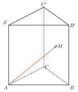
Cho hình lăng trụ tam giác \(ABC.A'B'C'\) với \(\overrightarrow{AA'}=\vec a\), \(\overrightarrow{AB}=\vec b\), \(\overrightarrow{AC}=\vec c\); \(M\) là trung điểm của \(BC'\). Khi đó \(\overrightarrow{AM}=\)…
Answer: d. Go from \(A\) to \(M\) along the edges: \(\overrightarrow{AM}=\dfrac{1}{2}\vec a+\dfrac{1}{2}\vec b+\dfrac{1}{2}\vec c\).
Đáp án d. Đi từ \(A\) tới \(M\) theo các cạnh: \(\overrightarrow{AM}=\dfrac{1}{2}\vec a+\dfrac{1}{2}\vec b+\dfrac{1}{2}\vec c\).
\(ABCD.A'B'C'D'\) is a cube with edge \(3\). Find \(\left|\overrightarrow{AB}-\overrightarrow{BC'}\right|\).
Cho hình lập phương \(ABCD.A'B'C'D'\) cạnh \(3\). Tính \(\left|\overrightarrow{AB}-\overrightarrow{BC'}\right|\).
Answer: d. With \(\overrightarrow{AB}\), \(\overrightarrow{AD}\), \(\overrightarrow{AA'}\) as unit directions (length \(3\)), the vector is \(3\cdot(1;\,-1;\,-1)\), length \(3\sqrt{3}=3\sqrt{3}\).
Đáp án d. Lấy \(\overrightarrow{AB}\), \(\overrightarrow{AD}\), \(\overrightarrow{AA'}\) làm ba hướng (độ dài \(3\)), vectơ bằng \(3\cdot(1;\,-1;\,-1)\), độ dài \(3\sqrt{3}=3\sqrt{3}\).
A force \(\vec F\) of \(120\) N pulls a sled along a straight road for \(12\) m. The angle between \(\vec F\) and the displacement is \(60^\circ\). The work \(A=\vec F\cdot\vec d\) (J) is…
Một lực \(\vec F\) có độ lớn \(120\) N kéo xe trượt đi \(12\) m trên đường thẳng. Góc giữa \(\vec F\) và độ dời là \(60^\circ\). Công \(A=\vec F\cdot\vec d\) (J) bằng…
Answer: c. \(A=|\vec F|\cdot|\vec d|\cos60^\circ=120\cdot12\cdot\dfrac{1}{2}=720\).
Đáp án c. \(A=|\vec F|\cdot|\vec d|\cos60^\circ=120\cdot12\cdot\dfrac{1}{2}=720\).
In the tetrahedron \(ABCD\), \(M\), \(N\) are the midpoints of \(AB\), \(CD\) and \(I\) is the midpoint of \(MN\). Exactly one equality below is correct. Which one?
Cho tứ diện \(ABCD\); \(M\), \(N\) là trung điểm của \(AB\), \(CD\) và \(I\) là trung điểm của \(MN\). Chỉ có một đẳng thức đúng. Đó là đẳng thức nào?
Answer: c. Use midpoints: \(\overrightarrow{IA}+\overrightarrow{IB}=2\overrightarrow{IM}\), \(\overrightarrow{IC}+\overrightarrow{ID}=2\overrightarrow{IN}\), \(\overrightarrow{IM}+\overrightarrow{IN}=\vec0\); \(2\overrightarrow{MN}=\overrightarrow{AD}+\overrightarrow{BC}=\overrightarrow{AC}+\overrightarrow{BD}\). Only \(\overrightarrow{MN}=\dfrac12\left(\overrightarrow{AD}+\overrightarrow{BC}\right)\) is among the true ones.
Đáp án c. Dùng trung điểm: \(\overrightarrow{IA}+\overrightarrow{IB}=2\overrightarrow{IM}\), \(\overrightarrow{IC}+\overrightarrow{ID}=2\overrightarrow{IN}\), \(\overrightarrow{IM}+\overrightarrow{IN}=\vec0\); \(2\overrightarrow{MN}=\overrightarrow{AD}+\overrightarrow{BC}=\overrightarrow{AC}+\overrightarrow{BD}\). Trong các phương án chỉ \(\overrightarrow{MN}=\dfrac12\left(\overrightarrow{AD}+\overrightarrow{BC}\right)\) đúng.
A square lamp \(ABCD\) weighing \(48\) N hangs from a hook \(S\) by four equal chains \(SA, SB, SC, SD\), each \(13\) dm long; \(S\) is \(12\) dm above the lamp (see the figure). The tension in each chain (N) is…
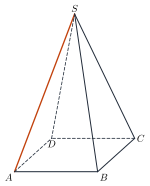
Một chiếc đèn hình vuông \(ABCD\) nặng \(48\) N được treo vào móc \(S\) bằng bốn sợi xích bằng nhau \(SA, SB, SC, SD\), mỗi sợi dài \(13\) dm; \(S\) cao hơn mặt đèn \(12\) dm (xem hình). Lực căng của mỗi sợi xích (N) là…
Answer: a. The vertical parts of the four tensions balance the weight: \(4T\cos\alpha=48\) with \(\cos\alpha=\dfrac{12}{13}\), so \(T=13\).
Đáp án a. Thành phần thẳng đứng của bốn lực căng cân bằng trọng lực: \(4T\cos\alpha=48\) với \(\cos\alpha=\dfrac{12}{13}\), nên \(T=13\).
\(|\vec a|=2\), \(|\vec b|=4\) and \(\vec a\cdot\vec b=4\). The angle between \(\vec a\) and \(\vec b\) is…
Cho \(|\vec a|=2\), \(|\vec b|=4\) và \(\vec a\cdot\vec b=4\). Góc giữa hai vectơ \(\vec a\) và \(\vec b\) bằng…
Answer: c. \(\cos(\vec a,\vec b)=\dfrac{4}{2\cdot4}=\dfrac{1}{2}\), so the angle is \(60^\circ\).
Đáp án c. \(\cos(\vec a,\vec b)=\dfrac{4}{2\cdot4}=\dfrac{1}{2}\), nên góc bằng \(60^\circ\).
8Common MistakesLỗi thường gặp
Adding lengths instead of vectors. \(|\vec a+\vec b|\) is usually not \(|\vec a|+|\vec b|\).
Cộng độ dài thay vì cộng vectơ. Nói chung \(|\vec a+\vec b|\ne|\vec a|+|\vec b|\).
Wrong direction. \(\overrightarrow{AB}\) and \(\overrightarrow{BA}\) are opposite vectors.
Nhầm hướng. \(\overrightarrow{AB}\) và \(\overrightarrow{BA}\) là hai vectơ đối nhau.
Angle with different start points. Move the vectors to a common start before using the angle.
Tính góc khi hai vectơ khác điểm đầu. Cần dời về cùng điểm đầu trước khi tính góc.
Dot product is a number. It is not a vector.
Tích vô hướng là một số. Nó không phải là vectơ.
9Lesson SummaryTổng kết
Triangle rule \(\overrightarrow{AB}+\overrightarrow{BC}=\overrightarrow{AC}\); parallelepiped rule for three edges.
Quy tắc ba điểm \(\overrightarrow{AB}+\overrightarrow{BC}=\overrightarrow{AC}\); quy tắc hình hộp cho ba cạnh.
\(\vec a\cdot\vec b=|\vec a||\vec b|\cos\theta\); \(\vec a\perp\vec b\iff\vec a\cdot\vec b=0\).
\(\vec a\cdot\vec b=|\vec a||\vec b|\cos\theta\); \(\vec a\perp\vec b\iff\vec a\cdot\vec b=0\).
Cube edge \(a\): face diagonal \(a\sqrt2\), space diagonal \(a\sqrt3\).
Hình lập phương cạnh \(a\): đường chéo mặt \(a\sqrt2\), đường chéo hình lập phương \(a\sqrt3\).
Key English words: vector, dot product, angle, parallelepiped.
Từ cần nhớ (chạm vào để xem tiếng Anh): vectơ; tích vô hướng của hai vectơ; góc; hình hộp.